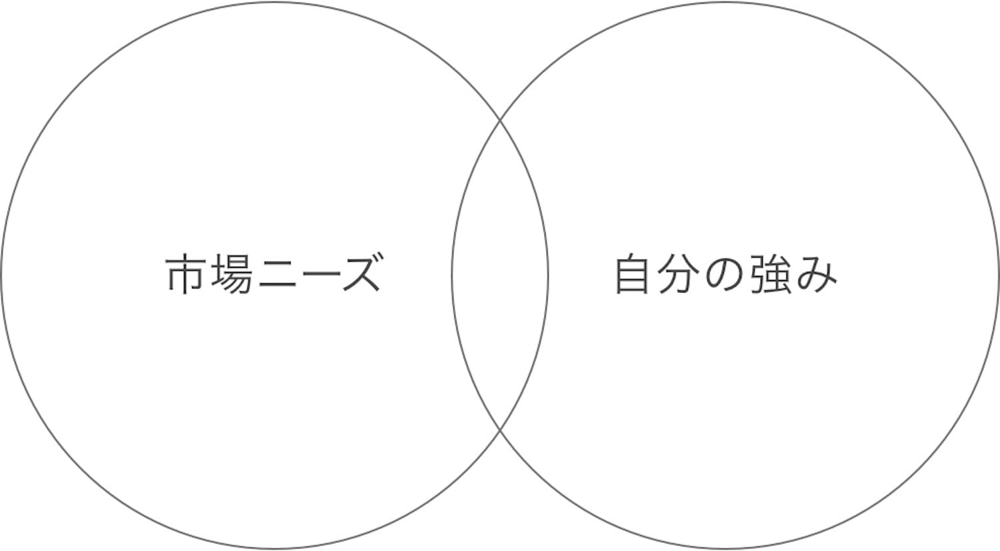

【謝罪】英語発信で勝てないので、しばし「別の戦略」を練っていきます

こんにちは、yuudaiです。
先日に、下記のような「お知らせ」をしました。
✓ブログ更新停止のお知らせ
なぜ、日本向けの発信を停止するのか？ 結論は「英語発信」に注力するためです。英語にフォーカスして発信します。
上記の発信後に、いつくかの応援メッセージも届きました。
しかし全力でやってみた所、違うと感じたので戦略変更します🙇♂️
しかし今回の記事は「リアルタイム性の高い記事」です。成功ノウハウを発信することも大切ですが、現状の「試行錯誤の共有」も重要なはず。この記事が長期的に価値を持つとは思いませんが、書いてみます。
結論：英語での発信では、今の僕では「勝てない」と判断した
{kind=link}
- マーケットのニーズ
- 自分が提供できる価値
よくある図ですが、下記のような感じ。要するに「円が重なっている部分」にフォーカスすると、お金が稼ぎやすかったりします。

過去に僕は「ブログ」や「プログラミング学習」の発信で稼ぎました。
{kind=link}
では、なぜ稼げたのか？ 結論は「プロダクト」が「マーケットに合致したから」です。要するに「マーケットのニーズ」に対して、僕が提供できる「価値」が重なっていました。
僕がブログのマーケットで稼げた理由
- 市場ニーズ：ブログ運営を分かりやすく学びたい＆稼ぎたい
- 自分の強み：わかりやすい解説。読者に目線を合わせた文章
僕がプログラミングのマーケットで稼げた理由
- 市場ニーズ：プログラミング基礎や、キャリアの未来を知りたい
- 自分の強み：易しい解説。自分のキャリアや働き方も同時に発信
自分で言うのもアレですが、僕の文章は分かりやすいです。というのも、僕自身が「難しいことは、あまり理解できない」というタイプなので、何かを学びつつ、同時に脳内で「シンプル化＋可視化」をしています。
それをブログなどで発信することで、より「僕の知識」が深まります。そして読者の方は、他のサイトよりも分かりやすく、学ぶことができます。学びは最高に楽しいです。
英語発信を続けても、勝ち目がない
英語発信をしてみて思ったことは、次のとおりです。
- その①：圧倒的に英語力が伸びる
- その②：しかしマーケットで勝てない
この先は「諦めるタイミングの見極め」の話です。僕の思考を共有します。
その①：圧倒的に英語力が伸びる
まず第一に、英語力が伸びました。完全に間違いないです。下記のとおり。
- その①：英文を書かない人が、英語ニュースを読みまくる
- その②：普段から英語を書く人が、英語ニュースを読みまくる
その①の方法でも伸びますが、その②の方法だと「お、この英語の表現は、自分の文章でも使えそうだな」という気持ちが生まれます。
要するに「主体的な読書」が出来るんですよね。 僕は綺麗な文章を読むことが好きなので、英語を読むときも、綺麗な表現を探しつつ、学びつつ読んでいました。
その②：しかしマーケットで勝てない
僕はビジネスに対して「ポリシー」があります。
上記です。仮に僕が理想を追いかけて、英語マーケットに挑戦を続けます。資金力もあるので、たぶん10年くらいは無収入でも継続できますが、これだとポリシー違反です。
夢と現実を、同時に追いかける話
賛否両論かもですが、僕は夢を追う起業家よりも、着実に稼ぐビジネスマンが好きです。なぜなら、夢を追うことと、お金を稼ぐことは、間違いなく「同時に実現可能」だからです。
それを体現しているのが、例えば「イーロン・マスク氏」ですよね。話を戻しまして、マーケット状況を可視化します。
海外マーケットと僕の強み

上記のとおりで、市場にマッチしていません。これじゃあ、反応が出なくて当たり前です。例えばですが、先日にも戦略を考えていました。恥ずかしいですが、僕のメモ書きを公開します。原文を、そのままの公開です。

上記のとおりで、完全に「わからぬ」なんですよね。なので「夢追い人」を続けてもいいのですが、それだとポリシー違反ですし、あまり意味ないので、戦略を変更します。
これからは「英語学習」の方法も発信します
基本的には、次の２つに注力していきます。
- クリプト発信
- 英語学習の発信
クリプトに関しては、間違いなく未来です。僕は10年単位にて、この業界にコミットします。ここは確定事項で、確実にブレません。資産の大半はクリプトにしているので、その点でも追い込んでいます。
なぜ、英語学習を発信するのか？
英語学習に関しては、結論は「僕自身が、さらに学ぶ為」です。先程の図を引用します。
現在は上記ですが、しかし僕の英語力が大きく向上したら、たぶん下記を狙えます。
- 市場ニーズ：クリプトを分かりやすく学びたい＆稼ぎたい
- 自分の強み：わかりやすい解説。読者に目線を合わせた文章
もちろん未来は不明なので、走りつつ考えます。しかし英語マーケットを見ている限りだと、たぶん「中級者向け」の部分が少なかったりするんですよね。下記のイメージです。

日本マーケットで戦う場合は、間違いなく「上級者向け」か「初級者向け」に注力が必須です。なぜなら市場規模が小さいので、中間層に向けて発信しても、あまり稼げない場合が多いからです。
しかし世界マーケットを狙うなら、中間層でも問題ないです。現在のSEOは「大企業だけが勝つゲーム」になりつつあるので、個人でチャンスを狙うには、中間層のターゲットが良さそうです。
決断を「後押し」してくれた言葉
以前から書いていますが、僕は与沢翼さんを尊敬しています。賛否両論のある方かもですが、しかし「個人での成功」に着目するなら、間違いなく「日本トップで稼いでる人」だと思います。
僕自身も「個人で稼ぐタイプ」なので、もはや「与沢さんを参考にしない理由が、見つからない」という状況です。そして先日のYouTube動画で、下記の言葉がありました。
スイマセン。この動画は「コミュニティ限定」の動画だったので、詳しい引用は出来ません。あと、全くもってステマじゃないです。
その戦略は、本当に正しいのか？
最初に考えた戦略は、基本的には間違っている可能性が高いです。それならば、さっさと捨てて、次なる方法を試すべき。繰り返しですが、僕のポリシーは「ダサくてもいいから、まずは稼げ」です。
後半パート：どちらにせよ英語は必須なので、学ぶ道しかない
{kind=link}
どちらにせよ、選択肢は残っていないと思う件
ここ最近の日本では、下記の変化があったと思います。
- 昔：英語学習は「大切」です
- 今：英語学習は「必須」です
というのも、円安や人口減少を考えたら、間違いないはず。多くの人は「危機が迫ったとき」に焦って行動します。しかし、それよりも「危機が迫ることを見越して、動くこと」が重要だと思います。
国内の「チャンス」は、劇的に低下していきます
こういった「ネガティブキャンペーン」は良くないかもですが、僕の意見として書かせてください。あと意見をいうだけじゃなく、僕も確実に行動します。
下記は「内閣府」が公式で発表しているデータです。
内閣府のデータ
現状のまま推移した場合、100年後には現在の3分の1まで急減
多くの人は「人口減少＝人間の数が減るだけ」と考えますが、別の表現をすると「チャンスの減少」とも言えます。例えば下記をご覧ください。
- A国：人口が少なくて、独自の言語を話す
- B国：人口が多く、英語を話せる人も多い
上記の２択だった場合に、大半の起業家は「B国」を選びます。この流れはすでに発生しており、多くの「クリプト関連の起業家」は、日本を出ています。
僕もある意味で、その１名です。資産の大半をクリプトにしていますが、日本だと税制が悪く、不透明すぎて、海外勢に勝ちづらくなります。
国内企業も、外国人採用を増やしていくはず
これからは徐々に「日系の会社だけど、言語は英語」という会社が増えるはず。以前に楽天が「社内の公用語を英語」にしましたが、そういった流れが増えるはず。
というのも、日本企業も海外と戦わないといけないので、競争力をつけるには、優秀な人材を採用することが必須です。
国内人口が減り続ける中で、どうしたらいいか？
言うまでもなく「リモートワークを含めた、外国人の採用」ですよね。
あとはベトナムにも優秀な「エンジニアの友人」がいます。彼はベトナムでトップの大学を卒業しており、現地で「開発会社」を経営しています。
多くの人が「リモートワークの心地よさ」に気づいたので、もう戻れないはず。例えば先日には「アップルの機械学習のトップ」が辞職しました。なぜなら、アップル社での「オフィスワーク」に戻るのが嫌だからです。
優秀な人材を求めて、企業が変化する
こういった感じで、優秀な人材は「自由」を求めます。優秀な人材を求める企業は、変化を迫られます。上位の企業が変化をすると、それが他の企業にも波及します。これは世界的なトレンドなので、間違いなく止まらないはず。
例えば原宿には「明治神宮」があると思いますが、その近くにオフィスビルを作るよりも、シンプルに「もっと自然を楽しめる環境」や「人々が休めるモール」を作るほうが良くないですか？
仕事なんて、どこでも出来ます。良い立地には、その良さを「増幅させる建築物」を作るほうが、人類全体の幸福度が高まると思います。
というわけで、英語話者を増やしていきます
ブログは終わりです。最後に１つだけ。僕自身の「やりたかったこと」として、英語事業は適しているとも思っています。７年前に書いた記事から、下記が引用です。
普通に生きてもツマラナイので、自由に、おもしろく生きます。何度も書いていますが『海外に出る日本人を増やす』という目標をもとに、南国でゆるゆると生きていきます。
ずっと昔から「海外に出る日本人を増やすこと」の重要性を感じていました。僕の初めての起業でも、事業領域は「留学」でした。
本当の気持ちとしては、次は「英語圏への挑戦」をしたかったのですが、現状は勝てないので、いったんは諦めます。諦めつつ、ガチで英語学習を継続しつつ、その過程で学んだことを発信します。発信することで、実は「僕自身」が誰よりも学べるからです。
というわけで、そこまで価値のない記事を書きました。引き続きで考えつつ、行動します。読んでいただき、ありがとうございます。英語を学びたい方は、一緒に頑張りましょう😌
P.S：普段の僕は「Twitter」を軸に発信しています。また最近は「Webマーケ教材」の作成に注力しており、ネットで稼ぐスキルを学べます。ブログの更新通知はtwitterでお知らせしていきます。